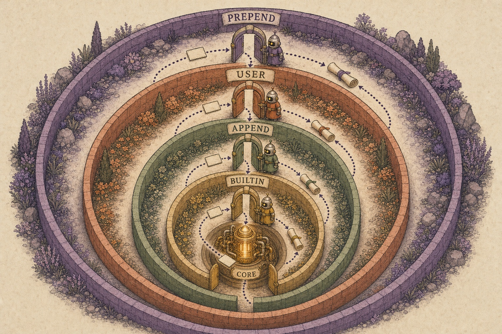

Architecture How an event travels
The hook chain
Every hook for an event joins one chain. The event goes in from the outermost seat, passes inward link by link to Claude Code's own behaviour, and the result comes back out the same way. Where a hook sits decides what it can see, what it can stop and who can overrule it.

The order
OUTERMOST sees the event first, the result last
1. prepend sec-default@builtin (where it loads), prependPlugins in order, other org mods
2. user mods the user installed (a mod runs before the mods it depends on)
3. append appendPlugins
4. builtin agents-md, diff, telemetry, …
5. core Claude Code itself: { plugin: 'engine', tier: 'core' }
INNERMOST
Within one module: the order `on` was called.A tool call, end to end
The tool path has the most layers, because settings hooks and permission checks interleave with the mod chain:
- Managed
PreToolUsehooks run first, and run again on any call a mod rewrote. This is the one layer a mod can't get in front of. tool.callis where mods guard and rewrite. A hook can answer with{ deny }or its own{ result }, and nothing beneath it runs.tool.checkis the permission decision.next(e)returns what rules, the permission mode and settings hooks decided, and a hook can return its own{ decision }. Where thesec-defaultguard loads, a user mod can't lift a manageddeny. Since 2.1.290 the event carriesagentIdand the org'sceiling.- The permission prompt isn't a render site. A mod can restyle almost everything else, but not what you're asked to approve.
Try it: a chain simulator
Tools an outer hook has
| Tool | What it does |
|---|---|
next(e) / next({ ...e }) | Continue inward, unchanged or rewritten. Resolves to the result from everything beneath. |
Return without next | Answer. Nothing beneath runs. |
await next(e), then edit | Post-process the result on its way out. |
Call next twice | Retry what's beneath. |
next.to(e, 'append' | 'builtin' | 'core') | Prepend and append mods only: skip the user tier. |
next.origin | Who raised the event. Because every $ call is an event, a prepended hook on fs.read sees which mod asked. |
next.signal | Aborts when the dispatch is abandoned. |
.catch(handler) | Runs if the hook throws, times out or is re-entered. next.called says whether it got as far as next. |
Why order beats parallel
Settings hooks for the same event run in parallel. When they disagree, the most restrictive decision wins, and when two rewrite a call's input, the last writer wins, in no fixed order. That's fine for allow-or-block and awkward for anything that composes. Mods run in sequence, so a redactor can run before a logger and the logger sees redacted text. A policy mod in prepend sees every user mod's rewrite before core does, and can audit or refuse every user mod's $ calls. The price of order is that a slow hook delays everything inside it, and a failed one is skipped unless it says otherwise.
Other chains worth knowing
| Event | What a hook's answer means |
|---|---|
prompt.submit | Rewrite text (the transcript shows the new text), add Claude-only context, or { drop }. |
prompt.compose | The whole system prompt as { sections: [{ id, text, scope }] }. scope: 'shared' sits before the cache boundary. Text that changes between requests breaks the prompt cache. |
turn.step | An async generator per model request. yield* next(e) streams through. A hook can change model or effort, rewrite chunks, or answer without calling the model. |
agent.spawn | Rewrite a subagent's prompt, type, model or working folder, or { deny }. Covers teammates (2.1.289) and workflow agents (2.1.292). |
session.append | Rewrite a stored row's content, for example to redact it. A row the engine appends is never refused. |
ui.render on AbovePrompt | Returning your own tree hides what mods further in drew, unless you embed await next(e). |